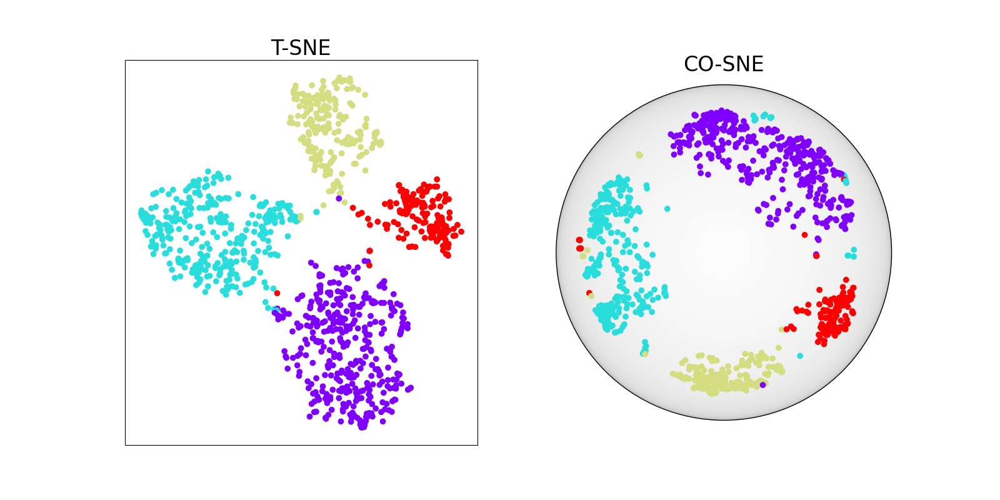

Note
Go to the end to download the full example code.
TSNE vs COSNE : Euclidean vs Hyperbolic#
We compare in this example two dimensionalty reduction methods: T-SNE and CO-SNE on a synthetic hierarchical toy dataset and on singlecell data. The first method computes an embedding in a 2D Euclidean space while the second one operates in the Hyperbolic Poincaré Ball model.
Load the SNARE-seq dataset (gene expression) with cell type labels#
def load_numpy_from_url(url, delimiter="\t"):
"""
Load a numpy array from a URL.
Parameters
----------
url : str
URL to load data from.
delimiter : str, default="\t"
Delimiter used in the data file.
Returns
-------
numpy.ndarray
Loaded data as a numpy array.
"""
response = urllib.request.urlopen(url)
data = response.read().decode("utf-8")
data = data.split("\n")
data = [row.split(delimiter) for row in data if row]
numpy_array = np.array(data, dtype=float)
return numpy_array
url_x = "https://rsinghlab.github.io/SCOT/data/snare_rna.txt"
snare_data = load_numpy_from_url(url_x) / 100
url_y = "https://rsinghlab.github.io/SCOT/data/SNAREseq_types.txt"
snare_labels = load_numpy_from_url(url_y)
Computing TSNE and COSNE on SNARE-seq data#
We can now proceed to computing the two DR methods and visualizing the results on the SNARE-seq dataset.
tsne_model = TSNE(verbose=True, max_iter=500)
out_tsne = tsne_model.fit_transform(snare_data)
cosne_model = COSNE(
lr=1e-1, verbose=True, gamma=0.5, learning_rate_for_h_loss=0.01, max_iter=500
)
out_cosne = cosne_model.fit_transform(snare_data)
fig, axes = plt.subplots(nrows=1, ncols=2, figsize=(16, 8))
axes[0].scatter(*out_tsne.T, c=snare_labels.squeeze(1), cmap=plt.get_cmap("rainbow"))
axes[0].set_xticks([])
axes[0].set_yticks([])
axes[0].set_title("T-SNE", fontsize=24)
plot_disk(axes[1])
axes[1].scatter(*out_cosne.T, c=snare_labels.squeeze(1), cmap=plt.get_cmap("rainbow"))
axes[1].axis("off")
axes[1].set_title("CO-SNE", fontsize=24)
plt.show()

[TorchDR] COSNE: ----- Computing the input affinity matrix with EntropicAffinity -----
[TorchDR] COSNE: ----- Optimizing the embedding -----
[TorchDR] COSNE: [0/500] Loss: 1.45e+01 | Grad norm: 8.38e-03 | LR: 1.00e-01
[TorchDR] COSNE: [50/500] Loss: 1.29e+01 | Grad norm: 4.25e-03 | LR: 1.00e-01
[TorchDR] COSNE: [100/500] Loss: 1.26e+01 | Grad norm: 2.42e-03 | LR: 1.00e-01
[TorchDR] COSNE: [150/500] Loss: 1.24e+01 | Grad norm: 1.30e-03 | LR: 1.00e-01
[TorchDR] COSNE: [200/500] Loss: 1.24e+01 | Grad norm: 5.03e-04 | LR: 1.00e-01
[TorchDR] COSNE: [250/500] Loss: 1.24e+01 | Grad norm: 5.47e-04 | LR: 1.00e-01
[TorchDR] COSNE: [300/500] Loss: 1.24e+01 | Grad norm: 1.50e-04 | LR: 1.00e-01
[TorchDR] COSNE: [350/500] Loss: 1.24e+01 | Grad norm: 7.95e-05 | LR: 1.00e-01
[TorchDR] COSNE: [400/500] Loss: 1.24e+01 | Grad norm: 1.46e-05 | LR: 1.00e-01
[TorchDR] COSNE: [450/500] Loss: 1.24e+01 | Grad norm: 5.87e-06 | LR: 1.00e-01
/home/circleci/project/torchdr/utils/visu.py:29: RuntimeWarning: invalid value encountered in arccosh
hypDistance = np.arccosh(1 + 2 * (distance) / (1 - distance + 1e-10))
Total running time of the script: (10 minutes 5.774 seconds)